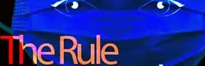
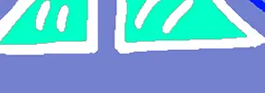
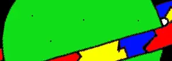
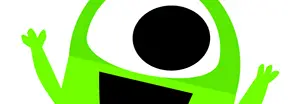
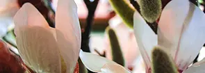

Portfolio
Her nede under kan du se på de forskellige temaer vi har været igennem på 1. semester
-

Intro Forløb
Intro forløb, hvor vi skulle lære hinanden at kende. Virkelig sjovt, virkelig hyggeligt
-

Grundlæggende web
På grundlæggende web lærte vi de basale værktøjer at kende, som vi så skulle bruge til at kode vores egen hjemmeside. Her kan du læse om opgave 02.04.02 responsive_site_v2
-

Ux
På UX lærte vi hvad der gjord en god brugeroplevelse på en hjemmeside. Her kan du læse om opgave 03.03.06 Prototype 2 og 03.03.03 Pitch
-

Animation
På animation lærte vi om JavaScript. Det gjord vi ved at kode vores helt eget spil. Her kan læse om dokumentation og spil via linket.
-

Redesign
På redesign skulle vi finde en allerede eksisterende virksomhed og lave nyt content og hjemmeside til dem.